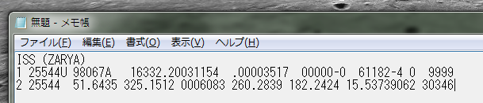
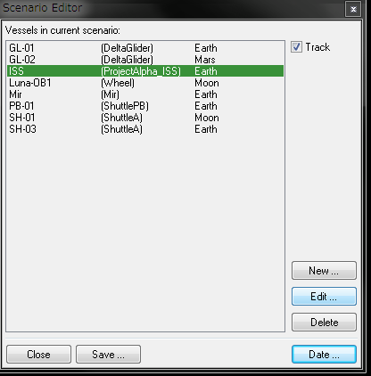
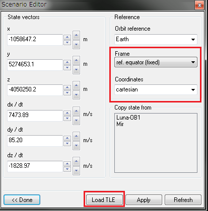
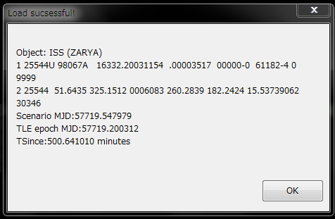

Scenario Editor TLEのインストールと操作
Scenario Editor TLEは、TLE形式の軌道データをOrbiterにインポートできるMODです。
実際の軌道データをOrbiterに読み込ませることで、人工衛星などの軌道も簡単に再現できます。
今回の内容に進む前に、シナリオエディタの基本操作を確認してください。
シナリオエディタの記事一覧
ダウンロード+インストール
※Orbiter2010でも2016でも使えます。
ダウンロードしたファイルを解凍して、Orbiterのインストールフォルダに上書き。
LaunchpadのModulesタブを開く。
ScnEditorTLEにチェックを入れる。
注意点 (Orbiter2016)
Orbiter2016において、宇宙船を地表に配置する場合は、通常のScnEditorを使用してください。
ISSの軌道データをインポートする
現実のISSは定期的に軌道を変更しているため、OrbiterにおけるISSの軌道とは異なる軌道を周回しています。
TLE形式で表される軌道データを使って、ISSの軌道を現実のそれに近づける方法について説明します。
TLEを取得する
今回は、CelesTrakさんで公開されているTLEを利用します。
以下のページにある、Space Stationsのリンクをクリック。
CelesTrak: Current NORAD Two-Line Element Sets
メモ帳などのテキストエディタを開いて、ISS (ZARYA) 以下の3行をコピーする。

適当な名前をつけて、.txt形式で保存する。

OrbiterにTLEを読み込ませる
ISSが登場する適当なシナリオでゲームを開始する。
（例：ChecklistsフォルダのDG to ISS）
Ctrlキーを押しながらF4キーを押す。
Scenario Editor TLEを選択してOKをクリック。
最初にDateをクリックして、Nowをクリック。※
※今回は現在の時刻を使用しますが、過去のミッションなどを参照する場合は過去の日付に設定してください。
※Nowボタンで現在時刻を取得すると、1分程度のずれが生じるため、気になる場合は手動で合わせてください。
一覧からISSをクリックして、Editをクリック。

State vectorsをクリック。
Frameをref. equator (fixed)にする。
Coordinatesをcartesianにする。

下のLoad TLEをクリック。
保存しておいたTLEのテキストファイルを選択して、開くをクリック。
TLEが読み込まれたらOKをクリック。

Applyをクリックすると、ISSが現実のそれとほぼ同じ位置に移動する。
以下のページにて、現実のISSの現在位置を確認できます。
Where is the International Space Station? - ESA
資料
TLEにおける数字の読み方については、以下のページに詳しく解説されているので参考にしてください。
きどうようそのひみつ(Author: KASHIWAI, Isana)
月日/日数の早見表
DOY Calendar - NOAA Earth System Research Laboratory